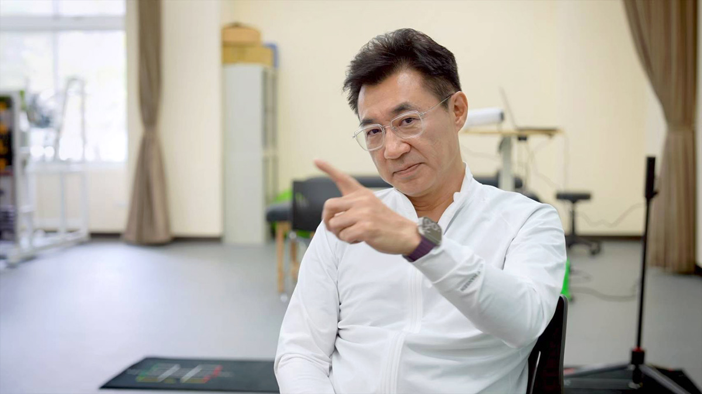
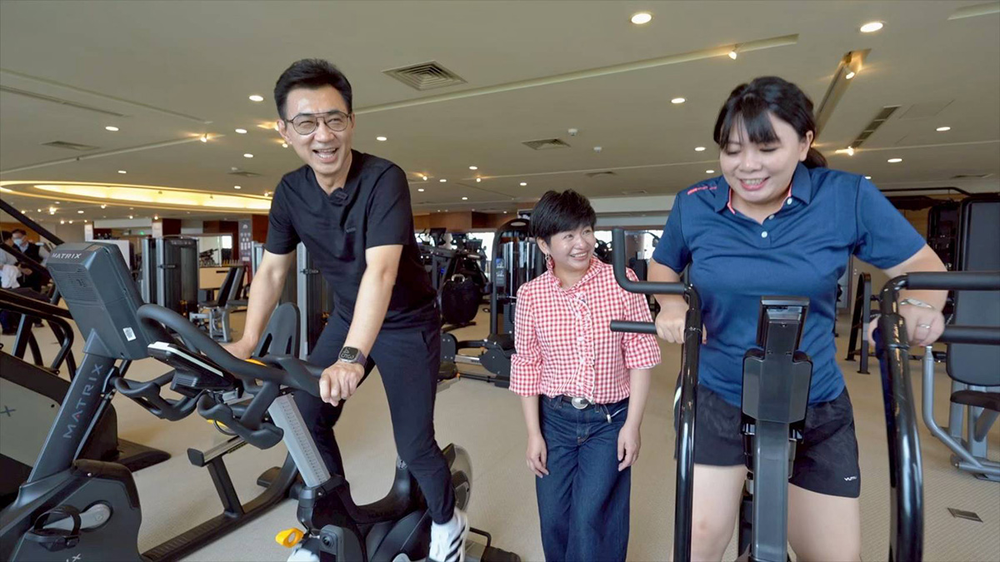
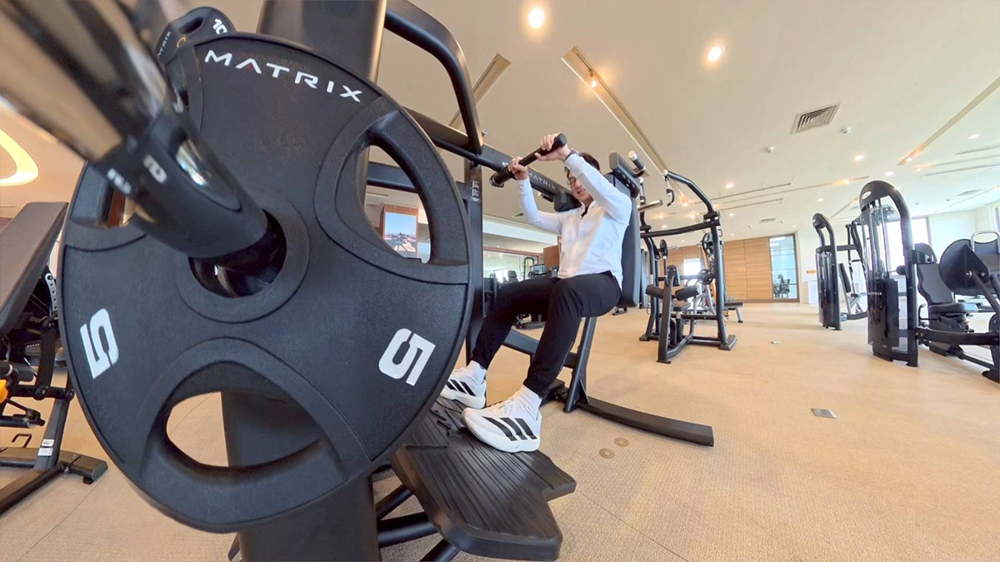
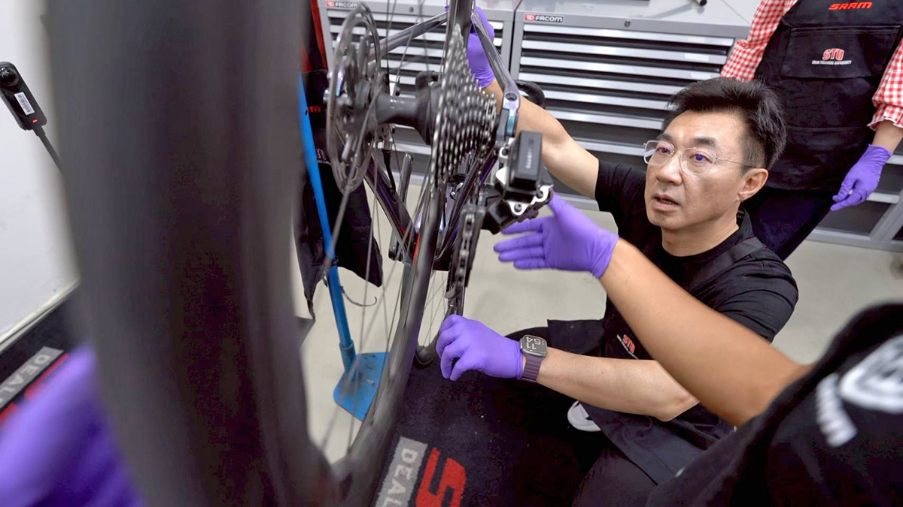

他的城市考題
江啟臣
看懂產業布局的人，能不能看見每一種人的生活？
◎ 報導／呂佳頴
◎ 攝影／柯勝雄
他的城市考題
◎ 報導／呂佳頴
◎ 攝影／柯勝雄
2026年4月
台中豐原運動中心
修身西裝不是每個政治人物都敢穿，因為那不只是版型，更是身體有沒有練的誠實，一不注意就會被出賣。敢穿上修身西裝的，除了台北市長蔣萬安以外，還有立法院副院長江啟臣，他們都有健身習慣。
江啟臣甚至一周重訓兩到三次。他笑說：「沒人不愛漂亮啦！」這句話意外讓人知道，他有偶包（偶像包袱），更何況他是海龍蛙兵出身，身材萬一走樣，肯定被虧瘋。但事情沒有只停在這裡。因為他知道自己在練的，不只是身體而已。而是一個台灣人每天都在用，卻不太意識到的產業。答案，就在台中。
深蹲機，讓他額頭的汗一直冒出來「啊⋯⋯！」江啟臣這一聲，拖得很長。「一下、兩下、三下⋯⋯」他數數的聲音開始顫，動作也慢了下來。
雙手高舉、沒有槓鈴、身體半蹲，微微後仰，這看起來挺輕鬆，感覺不會太累。我問他：「哪裡累？」他沒回答，只說：「妳來試試。」這玩意是「深蹲機」。看似沒有舉重，但透過設定，其實是負重深蹲。

▲ 江啟臣靠運動維持好身材，穿起西裝很修身。（圖／柯勝雄攝）
解釋自己正在做什麼運動的同時，他手上的動作停了。我打趣說：「不能停，別偷懶！」他看我的眼神，像是在說：妳饒了我。但隨即繼續做。還說：「是的，教練。」汗，從額頭冒出來。他說，「這真的很累，才做十下就爆汗。」
重訓這件事，江啟臣維持了一年多。最常做的是騎飛輪，原因很簡單——效率高。「飛輪騎半小時，可以消耗500卡，差不多一個便當。」他講這話時是站著騎的。「自行車比賽，爬坡一定站著騎。」他的聲音開始喘。
我突然想起江啟臣年輕時是海龍蛙兵，體力應該不錯才對。於是，我用了激將法：「1、2、1、2，蛙兵來了。」他很尷尬地說：「蛙兵是30年前的事。」還補了句：「我現在超過50歲了。」現場笑成一片。

▲ 江啟臣維持重訓一年多，最常做的運動就是騎飛輪。（圖／柯勝雄攝）
但江啟臣馬上說：「我體力不輸20幾歲時。」我沒答腔，用沉默看著他，或許是看到我眼中的狐疑，他說：「教練說的。」政治人物常常需要背書，沒想到連體力也要。但他沒有只做樣子，他是真的喘，真的流汗，已被器材操到不能假裝。
這時，他突然把話題轉出去：「很多健身器材，都是台中做的。」我愣了一下，不是沒聽過台中機械強。而是真的沒有意識到，原來你在健身房踩的飛輪、拉的器材、坐上的深蹲機，背後可能就是台中。
「全球的健康器材，台中做的，占了很大比例。」這如果在會議室裡聽，很像簡報。但剛剛他才被深蹲機逼到爆汗，所以這句話突然變得很具體。一台器材，不只是器材。它是鋼材、設計、精密加工、機械結構、人體工學，也是台中一整條不太被看見的產業鏈。
有次他在國外飯店健身房踩飛輪，品牌是西班牙的，很大，很有名。但低頭一看：Made in Taiwan。讓他大吃一驚的，還有全美排前三的連鎖健身房，是台灣人開的。用的器材更是我們自己創建的品牌，同樣也是台中做的。

▲ 全球的健身器材，有40%是台中做的。（圖／柯勝雄攝）
還有個更誇張的故事：台中榮總曾從國外採購一批健身器材，繞了一圈買回來，發現是我們自己做的。更荒謬的是，那家公司和中榮在同一條路上，一個在路頭，一個在路尾。
原來台中不是沒有製造出東西，而是東西常常藏在別人的品牌後面；不是沒有實力，是很多時候，我們先讓世界用了，世人才慢慢知道是我們做的。
一台自行車，看起來只是交通工具，但構成它的，從來不只是一個品牌。包括，車身、握把、變速器、煞車系統、輪圈、鍊條，各有製造廠商，最後才組裝成一台車，背後的這條產業鏈，就在台中。
這時，江啟臣手上已拿著鍊條，小心翼翼地要套上自己剛鎖好的變速器。變速器的電池已經共規，代表各種機型的車都能共用，這是環保，也是進步。這類的高階變速器是國際零組件商在台中製造的，人家看中這裡的機械實力，來台設廠。但這一切一點都不理所當然。

▲ 江啟臣手上拿著鍊條，套上自己剛鎖好的變速器。（圖／柯勝雄攝）
千禧年2000年前後，自行車產業曾面臨出走、各自競爭、彼此消耗的困境。最後，業者痛定思痛自行整合，成立A-Team。品牌廠與零件廠一起合作，把產業鏈留在台灣，再一起去打國際盃。江啟臣說：「如果沒有A-Team，這產業可能早就不見了。」更直白一點：如果全部西進，很多東西可能早就被吃乾抹淨。
一旁的業者說：「大家都在這裡，調貨、溝通都很有效率。」這句話是台中製造的核心。不是單一英雄，不是一間公司打天下，而是一群廠商在同一個地方，靠著距離、信任、速度和技術，把東西做出來。
江啟臣看台中市，就從這裡開始。他看一台器材，不只看器材；看一台自行車，不只看品牌；看一場比賽，也不只看熱鬧。他會往後拆，拆到零組件、拆到供應鏈、拆到市場、拆到人怎麼被留下來。這是他的強項，但也是他的城市考題，因為城市不是只有產業鏈，城市還有人的感覺。
產業有了，健康意識也有了，接著要怎麼把人帶進來？「賽事經濟」是好法子。比賽、觀光、城市特色，要串起來，才可能有成功的樣貌。沒人希望產業只是停在製造，賽事經濟會是變現的路徑。「那全是就業機會啊。」他說。但賽事經濟背後的現實，沒有那麼單純。場地、經費、行銷、資源整合，一件比一件難。很多縣市都在煩：錢要去哪找？有錢才能蓋場館、辦比賽，這是橫在眼前的第一關。
本來該在去年（2025）通過的總預算，拖到今年8月才審完，這讓很多地方計畫卡住。他說：「以民為本，很多事都可以解決。」、「朝野要能對話。」我問，立院卡預算會是常態嗎？「人民不喜歡空轉。」他一臉憂心。一旦空轉，大家為了卸責，會相互攻擊，然後變成朝野對立的惡循環。
江啟臣不太像那種一開口就要把對方打死的人，他比較像在找系統怎麼重新接回去。這時候，懂系統的人能不能突破僵局？還是會被僵局反過來卡住？ 這是個好問題。
講這些話題時，我們在豐原運動中心，時間近中午，江啟臣的辦公室同仁準備了健康餐。還有台中經典的早午餐標配：炒麵加豬血湯。他的表情瞬間有點為難，表情像不知道怎麼選擇的小孩。「我已經吃一個多月健康餐了。」他掙扎地說。但最後，拿了炒麵。
我在旁邊笑著說：「分我一點，你罪惡感會比較小。」吃下麵的第一口，他驚呼：「哇！感覺好像被關出來。」他一邊吃麵一邊說：「完蛋，明天去踩飛輪時，會被教練問吃了什麼。」隨即打開健康餐盒，吃點青菜和雞胸肉。我想，那是吃心安的。
▲ 健康餐或台中人的早午餐標配「炒麵+豬血湯」，午餐該選哪一個？江啟臣在掙扎過後選了炒麵。（圖／柯勝雄攝）
這些其實都很重要，因為台中不只有工具機、自行車、精密製造和健康器材，也是一碗炒麵加豬血湯。產業鏈很重要沒錯，但人是靠味道記得一座城市的。他指著健康餐盒說：這其實也是產業鏈的一部分。從器材，到賽事，到飲食，都是大健康產業。而這個產業要成立，他自己得先撐住。重訓、飲食控制、飛輪，他就像乖寶寶一樣，把這些變成日常。
江啟臣曾是蛙兵、學者、立委、副院長。採訪這天，他真的流了很多汗，因為所有動作都不是比畫、比畫而已。他用練身體證明，運動、科技、健康，可以連成一條產業鏈。他很會看系統，從一台深蹲機，他看見健康器材；從一台飛輪，他看見台中製造；從一台自行車，他看見供應鏈；從一場賽事，他看見觀光和就業；從一份健康餐，他看見大健康產業。
這是他的能力，然而城市不是一張產業地圖。城市有「情緒」，有「味道」，有早上的炒麵，有市民每天塞在路上的不耐煩，有年輕人留下來或離開的選擇，也有一種很現實的問題：「你講的這些，市民感覺得到嗎？」這就是江啟臣的台中考題。

地方跑得久的人，能不能跑出城市方向？

給答案可以很快，城市治理什麼都能馬上辦嗎？

從競爭中突圍的人，能不能讓不同地方、派系與世代重新走在一起？

直率的真實，能轉換成市民的治理信任嗎？

一路把每一棒跑好的人，能不能跑出自己的路線？

習慣把答案整理清楚的人，能面對沒有標準答案的台北嗎？

看見缺口的人，能從台北的各種「可是」裡找到方向嗎？

會維修城市的人，能想像「城市」嗎？

跑遍新北的人，能不能把腳印走成方向？

擅長管理複雜系統的人，能讓快速長大的桃園產生共同方向嗎？

熟悉制度的法律人，能找回「消失的4分鐘」嗎？
新聞部
副總經理 王結玲
議題研究中心／呂佳頴
採訪中心攝影組／柯勝雄
網路新聞中心／楊致中・談雍雍・吳家瑜
數位事業部
內容策展組／廖玉貞・彭嘉儀・林佳瑤・李佳綺
© TVBS Media Inc. All Rights Reserved.｜聯利媒體股份有限公司